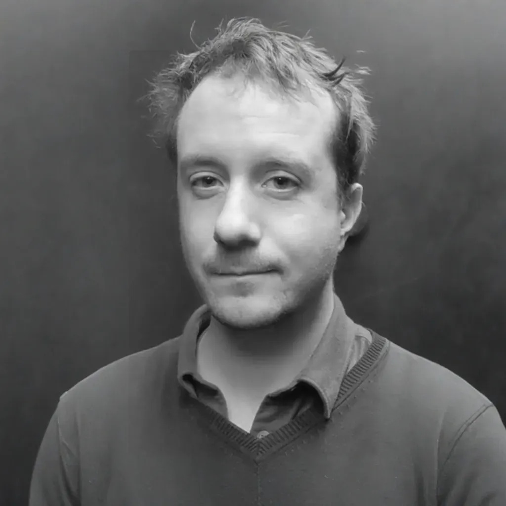

Research Scientist
I am currently a Research Scientist at Mines ParisTech PSL, specializing in 3D digitalization and processing with a focus on system-oriented applications. I earned my PhD from Université de Picardie Jules Verne, under the supervision of El Mustapha Mouaddib. My doctoral research concentrated on radiometric calibration and registration of LiDAR point clouds, utilizing corrected intensity data to enhance the alignment of 3D digital twins of cultural heritage sites.
Following my PhD, I completed a postdoctoral research project focused on the development of a multi-server network system for integrating LiDAR data, obstacle detection through deep learning, and SLAM algorithms. This system featured multi-service capabilities, real-time processing, and multi-stakeholder interfaces.
Currently, in my second postdoc, I am working on the development of volumetric video technologies for applications in art and crafting, further expanding my expertise in innovative 3D imaging techniques.
nathan.sanchizviel@pm.me